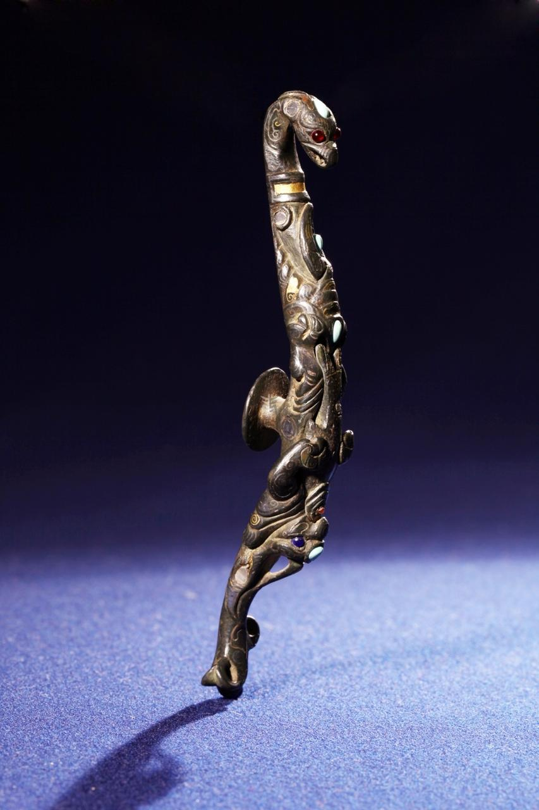
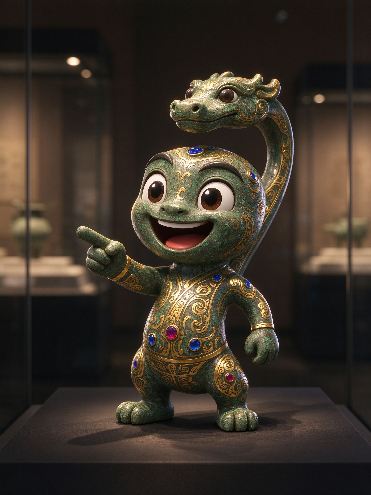
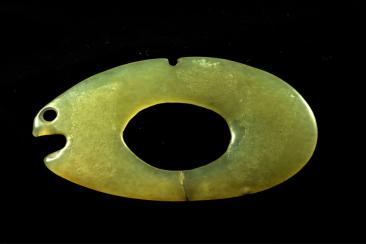
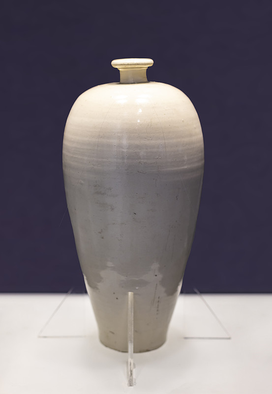
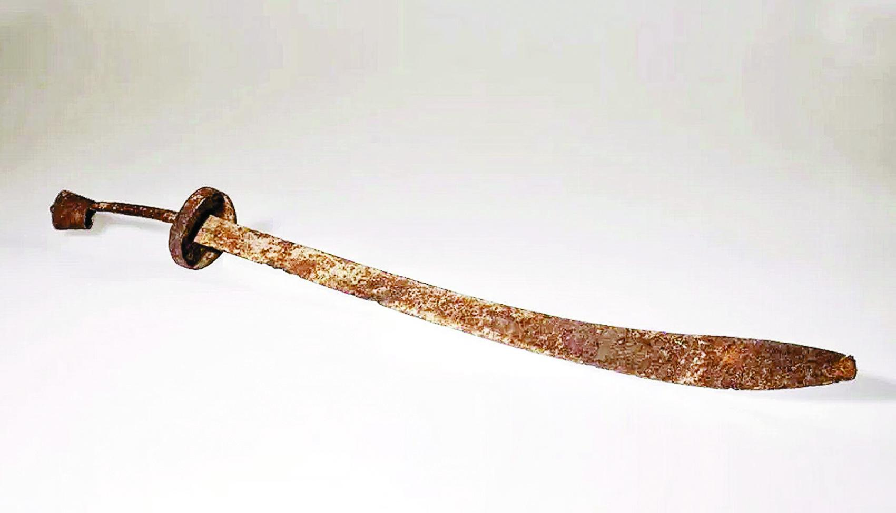

让沉睡千年的
吉林文物开口说话
何以中国，和合共生。从松花江畔的鱼形玉佩到白山黑水的抗联单刀，四件镇馆级文物今夜集体苏醒——点击「唤醒」，听它们亲口讲述这片土地的往事。
四件国宝 · 等待苏醒
它们已在展柜中沉睡多年。点击「唤醒」，AIGC 气息注入，文物将开口讲述自己的前世今生。


错金银"丙午神钩"铜带钩
通长15.7厘米，钩身铸一鸟喙神人双手抱鱼，通体错金银，镶嵌11颗红蓝宝石与绿松石。汉中央王朝赐予夫余国贵族的国礼，是古人对「高迁」最浪漫的期许。

鱼形玉饰件
青玉质地，通体磨光，呈椭圆形，一端圆孔与「＞」形豁口组合，恰似鱼首。1986年出土于长岭县腰井子遗址，是松花江畔先民渔猎生活的缩影。

定窑白釉梅瓶
小口、短颈、丰肩、瘦底、圈足，线条流畅秀美，被誉为「中国瓷器第一造型」。1980年出土于舒兰市完颜希尹家族墓地，胎细釉润，莹白如雪。

东北抗联少年营铁铸单刀
长95厘米，刀体扁月形，锈迹斑斑。东北人民革命军第一军独立师少年营创建时仅有的两把单刀之一，曾随70余名13至18岁的少年转战磐石林海、浴血白山黑水。
吉林文物群像
一座博物院，半部东北史。高句丽、渤海、辽金遗珍与历代书画汇聚于此，每一件都藏着白山松水的记忆。
直径26厘米，镜背铸契丹字铭文，是辽代制镜与契丹文字的珍贵合璧，吉林省博物院十大国宝之一。
苏轼传世行书名迹，与《中山松醪赋》合卷，吉林省博物院镇馆级书画，被誉为「国宝级」藏品。
金代画家张瑀名作，描绘蔡文姬归汉场景，人物鞍马刻画精绝，是中国绘画史经典之作。
南宋宫廷画家杨婕妤长卷，绘四季花卉，工致清雅，为吉林省博物院书画重宝之一。
辽代石塔雕饰彩绘，层檐华美，是研究辽代建筑与彩绘艺术的重要实物。
汉代玉质耳杯，温润如脂，为宴饮之器，尽显汉代贵族生活之雅。
文明年轮 · 七千年时光刻度
从新石器时代的第一枚玉鱼，到白山黑水间的抗日烽火，吉林大地的文明脉络沿松花江一路铺展。
腰井子遗址 · 鱼形玉饰件
松原长岭县腰井子村北岗，先民在此渔猎定居。1986年出土的青玉鱼形饰件，用一枚圆孔与豁口勾勒出鱼首，把「靠水吃水」写进玉里。
左家山遗址 · 曲体玉龙
长春农安左家山遗址出土曲体玉龙，红山文化风格，是东北早期玉文化在吉林大地的实证。
丙午神钩 · 赐予夫余的国礼
汉中央王朝以错金银工艺制成这枚带钩，赐予东北夫余国贵族。1968年于榆树市刘家乡福利村重见天日，铭文八字，期许「君必高迁」。
契丹文八角铜镜 · 大安出土
1971年出土于大安县红岗村。镜背铸契丹文字铭文，辽代制镜工艺与契丹文字的罕见合璧，诉说草原与中原的交融。
定窑白釉梅瓶 · 随葬完颜希尹家族
1980年出土于舒兰市小城乡完颜希尹家族墓地。金朝开国功臣家族墓中，随葬这件定窑白瓷——莹白温润，见证女真贵族对中原瓷艺的珍爱。
抗联少年营 · 铁铸单刀
东北人民革命军第一军独立师少年营在磐石成立，70余名少年（最小13岁）握枪持刀，转战林海雪原。这把单刀是营队创建时仅有的两把之一。
单刀重见天日 · 入藏吉博
因作战转移被埋于磐石县二道沟的单刀，在开荒中被农民发现，此后郑重移交吉林省博物院，成为国家一级文物。
四件国宝 · 全部苏醒
感谢你逐件唤醒它们。7000 年的吉林故事，正通过每一道裂纹与锈迹，与你相见。